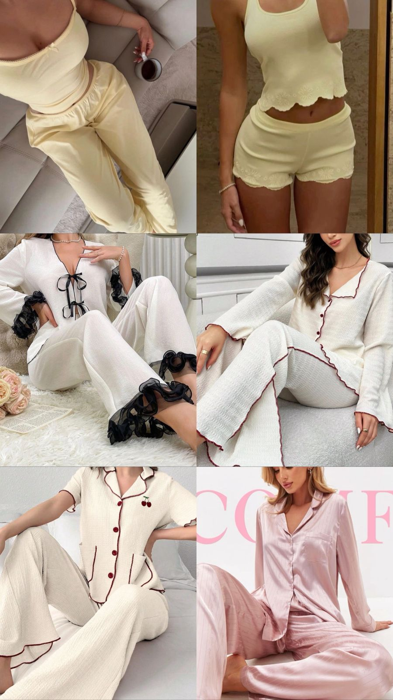

Grupo Ana
Actualmente existen muchas tiendas de ropa con estilos similares, pero no todas logran transmitir calidad, autenticidad y comodidad en una sola prenda. Este emprendimiento surge con la intención de crear una propuesta diferente, enfocada en prendas que puedan adaptarse a la vida cotidiana sin perder elegancia ni estilo.
La idea principal es desarrollar una marca propia capaz de generar confianza y personalidad en cada diseño, pensando especialmente en mujeres que buscan sentirse seguras y cómodas con lo que usan.
Este proyecto está enfocado en la creación de una marca de moda femenina con diseños modernos y versátiles. Se busca que cada prenda pueda combinarse fácilmente con outfits cotidianos para universidad, salidas casuales o eventos especiales.
Además de la apariencia, uno de los aspectos más importantes del emprendimiento es mantener una buena calidad en las prendas y ofrecer precios accesibles para el público.

Uno de los enfoques principales del emprendimiento es desarrollar prendas modernas que puedan utilizarse fácilmente en la vida diaria, combinando elegancia, comodidad y autenticidad.
Cada diseño busca transmitir seguridad y personalidad, manteniendo siempre una buena relación entre calidad, estilo y precio accesible.
La intención es crear outfits versátiles que puedan adaptarse a diferentes momentos cotidianos como la universidad, reuniones, salidas casuales o eventos especiales.
El principal objetivo es construir una marca reconocida por su calidad, comodidad y diseño. También se busca crear prendas que permitan que cada mujer se sienta sexy, elegante y cómoda al mismo tiempo.
Otro objetivo importante es aprender más sobre telas, moda y diseño, para así comprender mejor el mercado y desarrollar productos que realmente conecten con las necesidades del público.
El emprendimiento planea crecer poco a poco mediante investigación, creatividad y aprendizaje constante. Dentro de los planes se encuentra realizar cursos relacionados con telas, diseño y tendencias de moda, permitiendo adquirir conocimientos más profundos sobre la industria.
También existe interés en asistir a eventos como el Bogotá Fashion Week, con el fin de descubrir nuevas ideas, conocer proveedores y aprender más sobre cómo funciona el mercado de la moda actualmente.
La idea de este emprendimiento nace del deseo de crear algo auténtico y diferente. Más allá de vender ropa, el propósito es transmitir una identidad propia mediante prendas que reflejen confianza, estilo y comodidad en cada detalle.
Cada diseño representa el interés por combinar moda y funcionalidad, pensando en cómo las personas utilizan la ropa en su día a día.
El emprendimiento está dirigido principalmente a mujeres jóvenes y adultas, aproximadamente entre los 15 y 40 años. Se busca llegar a personas interesadas en prendas modernas, cómodas y fáciles de combinar para diferentes ocasiones.
El enfoque principal está en quienes desean vestir bien sin perder comodidad y buscan outfits versátiles para la universidad, reuniones o actividades cotidianas.
Se espera que el proyecto logre consolidar una identidad propia dentro del mercado, destacándose por la calidad de sus prendas y la conexión con sus clientes.
A futuro, la meta es ampliar la variedad de diseños, fortalecer la marca y generar reconocimiento gracias a la autenticidad y dedicación reflejada en cada producto.
Diseñar prendas modernas y versátiles que permitan a las mujeres sentirse cómodas, elegantes y seguras de sí mismas, ofreciendo calidad y estilo en cada colección.
Convertirse en una marca reconocida por su autenticidad, calidad y creatividad, creciendo dentro de la industria de la moda y logrando inspirar confianza y estilo en cada cliente.